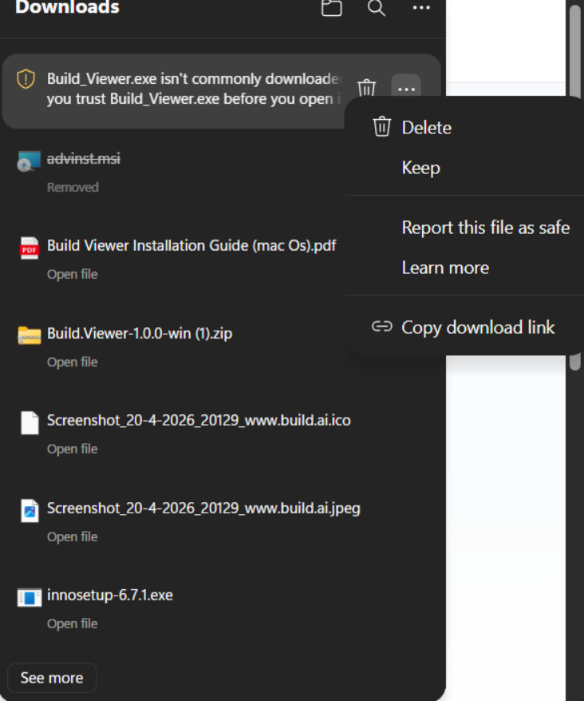
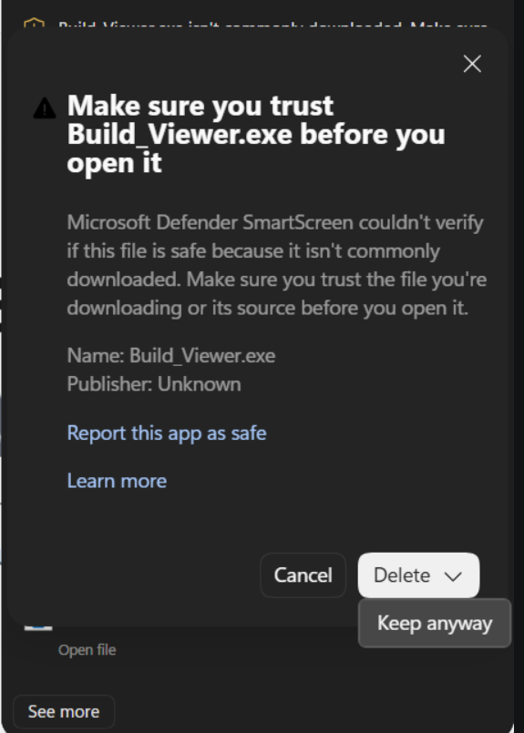
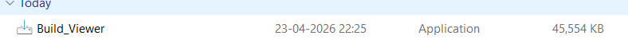
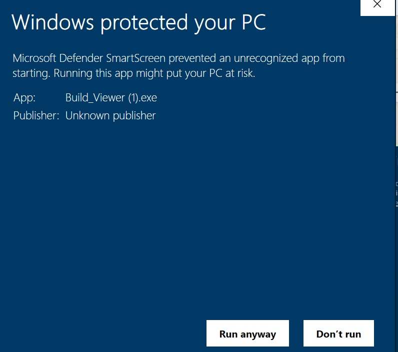
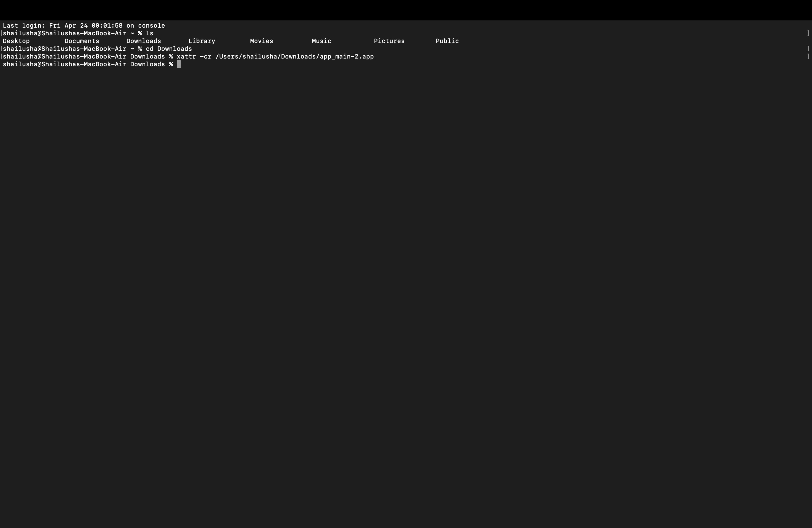

Step 1
Download the installer
Click Download for Windows on this website. In Edge/Chrome downloads panel, keep the file if you see a warning that the app is not commonly downloaded.

You can view good and bad hours, calculate average, check the space left in the SD card, and log OPS data. You can also send data directly to WhatsApp or download it as a PDF.
This version works for both old devices and new devices with .build files.
Requires Windows 10+ or macOS 11.0+
BUILD.AI AVERAGE CALCULATOR
Insert SD card to get started
Build Viewer seamlessly connects with your SD cards to provide immediate insights into factory and shift performance.
Instantly calculate Good Hours, Bad Hours, and Total Hours from your deployment media. View clear, color-coded metrics at a glance.
Monitor Total Space, Used Space, and Free Space on your cards. Automatically calculates Optimal Recording Time Left.
Log operations sessions with specific metadata: Factory Name, Department, Shift Details, and Operator counts.
Follow these exact steps to install Build Viewer safely when Windows shows SmartScreen warnings for new apps.
Step 1
Click Download for Windows on this website. In Edge/Chrome downloads panel, keep the file if you see a warning that the app is not commonly downloaded.

Step 2
Open the three-dot menu in Downloads and select Keep. If prompted, choose Keep anyway to retain the installer.

Step 3
Locate Build_Viewer.exe in your Downloads folder and double-click it to start setup.

Step 4
If Windows shows Windows protected your PC, click More info and then Run anyway.

SmartScreen warnings are common for newly released unsigned apps. Download only from the official Build Viewer GitHub release page.
Follow these steps to install Build Viewer safely on macOS.
Step 1
Double-click the .zip file provided to extract its contents.
Once extracted, you will see the Build Viewer application.
Drag and move the app to your Desktop or into your Applications folder for easy access.
Step 2
Do not double-click the app initially.
Instead, right-click (or Control + click) the app and select Open.
If a security warning says the app is from an unidentified developer, click Open again to continue.
If macOS shows that the app is "damaged and should be moved to the bin", follow these steps:
